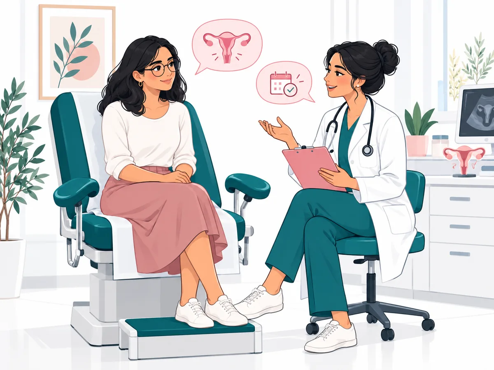

التكوين والخبرة
تخرّجت الدكتورة هاجر القابسي بوجلبان من كلية الطب بتونس، وتختص في أمراض النساء والتوليد. تستقبل المريضات لاستشارة تناسب كل حالة.
أخصائية في أمراض النساء والتوليد
♧ كلية الطب بتونس

رعاية صحة المرأة في العوينة، تونس، مع الإصغاء والاحترام.
تخرّجت الدكتورة هاجر القابسي بوجلبان من كلية الطب بتونس، وتختص في أمراض النساء والتوليد. تستقبل المريضات لاستشارة تناسب كل حالة.
تعتمد الاستشارة على الإصغاء، وشرح الخيارات الطبية بوضوح، واحترام خصوصية المريضة.
متابعة تراعي مراحل صحة المرأة المختلفة.
تستقبلكم العيادة بموعد مسبق في مركز أوليفيا الطبي.
مركز أوليفيا الطبي، الطابق الأول، C1-8، نهج الشيخ محمد النيفر، حي النخيل (بجانب مونوبري الزيتون)، العوينة، تونس 2036
عرض على خرائط Google ↗تُشيد بالمهنية والإصغاء واللطف
— Amal Dabech
تُثني على الإصغاء وحسن التعامل
— sarah 669
تُقدّر الشرح الواضح لمراحل الاستشارة
— Cyrine Mss
ملخصات لآراء منشورة علناً. قد يتغير التقييم وعدد الآراء.
اطّلعي على صفحات الدكتورة هاجر القابسي بوجلبان في الدلائل الطبية وعلى خرائط Google.